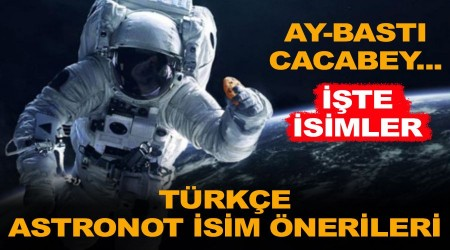

Astronot İsim Önerileri
TDK’nin 2005 yılında 'astronot' için 'gökmen' ve 'uçman' kelimelerin önerdiğini belirten Gülsevin, kurumun bir bilim kurumu olarak doğru olduğunu düşündüğü şekilde kelime türeterek öneriler yaptığını vurgulayarak, “Bunların kullanılıp kullanılmaması halkın zevkine de bağlı kalıyor. Bir kelime türetiyorsunuz, tutulmuyor; başka bir kelime yanlış türetiliyor ama tutuyor. Bazıları tutuyor ve yaşıyor. Doğru türettiklerinizden bile yaşamayan var. Demek ki doğru türetmek, dilin ölçülerine göre ve Türk dilinin kurallarına göre türetmek de kelimenin tutunabilmesinin garantisi değil" diye konuştu.
En çok önerilen kelimenin 'göktürk' olduğu bilgisini veren Gülsevin, "Bir yandan 'gök' var, bir yandan 'Türk' var. O da halk tarafından yakıştırılıyor. TDK Başkanı olarak fikrimi değil, tespitimi söylüyorum; 'Göktürk' bizim keşif uydumuza verilen isim oldu. Hem bizim keşif uydumuz 'Göktürk' hem de eski adıyla astronot 'göktürk' olur mu? Olmaz da diyemiyorum, olur da diyemiyorum. Bunları önümüzdeki süreç gösterecek" ifadelerini kullandı.
DUYURULAR
12.02.2021
www.erenyolcu.works


12.02.2021
En son haberlerimizden haberdar olmak için bizi takip edin!